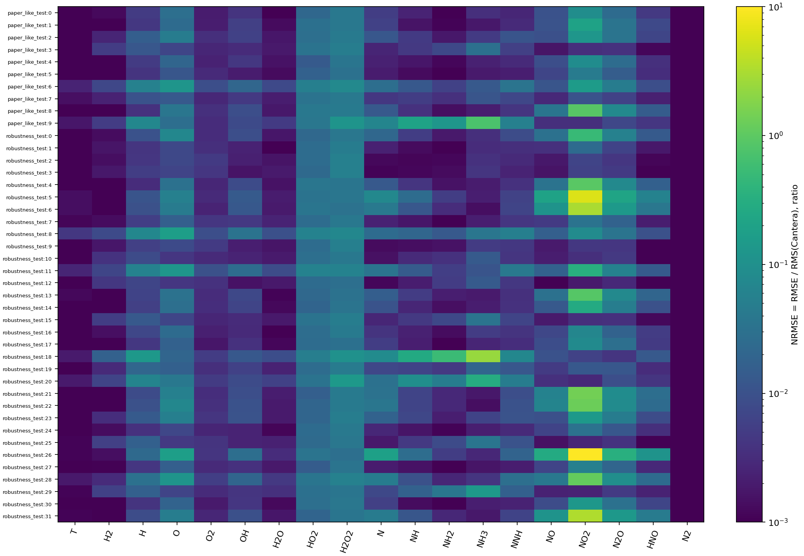
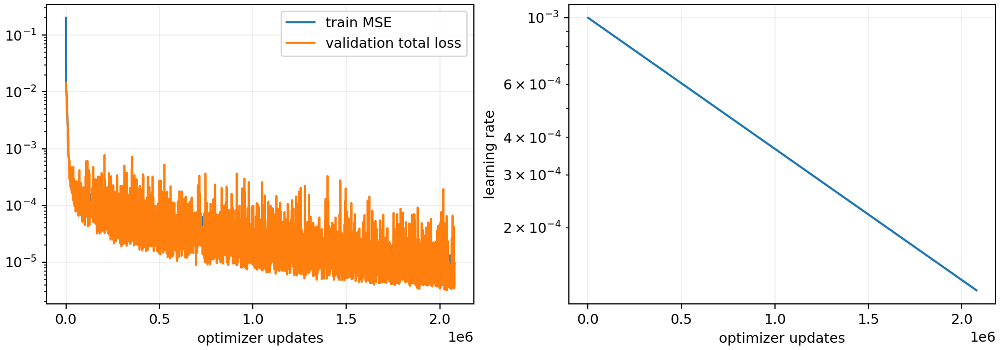

초기조건과 시간에서 전체 궤적을 직접 질의한다. 자기 예측 되먹임, 학습 중 물리 제약, 사후 물리 보정은 없다. 기존 React-DeepONet 20us 반복 예측과 다른 문제다.
원저자 설정의 GRI30·1atm·500조건·500시각·19변수·34038파라미터를 사용했다. 원저자 가중치와 원래 LHS 난수시드는 없어 동일 데이터/가중치의 복제라고 부를 수 없다. 시간상한은 평탄 판정이 아니다.
paper_like_test는 독립10조건, robustness_test는 별도32조건이다. 모든 조건의 그림을 제공한다. 선택은 원저자 방식의 시간점 검증 오차만으로 끝낸 뒤 테스트를 열었다.
joint9_curve는 온도+8반응종의 NRMSE가 모두0.1이하인 곡선 정확도다. 음수 등 물리 유효성은 별도 열이며 곡선 통과를 유효한 물리 상태와 혼동하지 않는다. NRMSE는 RMSE/RMS(Cantera)이며 백분율이 아니다. 전체1s는 문헌의 로그 시간격자, 초기0.1ms는 균일격자, 점화확대는 Cantera에 따른 가변창이다. TableS3와는 물리단위RMSE를 비교한다.
전체변수 PDF · 점화확대 PDF · 변수별 NRMSE · 문헌RMSE 비교 · 집계표
[
{
"split": "paper_like_test",
"model": "selected",
"total": 10,
"finite_complete": 10,
"strict_physical_valid": 0,
"joint9_curve": 8,
"joint9_curve_full_and_early": 8,
"joint9_curve_full_and_ignition": 8,
"joint9_with_strict_physical_valid": 0
},
{
"split": "paper_like_test",
"model": "final",
"total": 10,
"finite_complete": 10,
"strict_physical_valid": 0,
"joint9_curve": 7,
"joint9_curve_full_and_early": 7,
"joint9_curve_full_and_ignition": 7,
"joint9_with_strict_physical_valid": 0
},
{
"split": "robustness_test",
"model": "selected",
"total": 32,
"finite_complete": 32,
"strict_physical_valid": 0,
"joint9_curve": 26,
"joint9_curve_full_and_early": 26,
"joint9_curve_full_and_ignition": 26,
"joint9_with_strict_physical_valid": 0
},
{
"split": "robustness_test",
"model": "final",
"total": 32,
"finite_complete": 32,
"strict_physical_valid": 0,
"joint9_curve": 19,
"joint9_curve_full_and_early": 19,
"joint9_curve_full_and_ignition": 19,
"joint9_with_strict_physical_valid": 0
}
]
